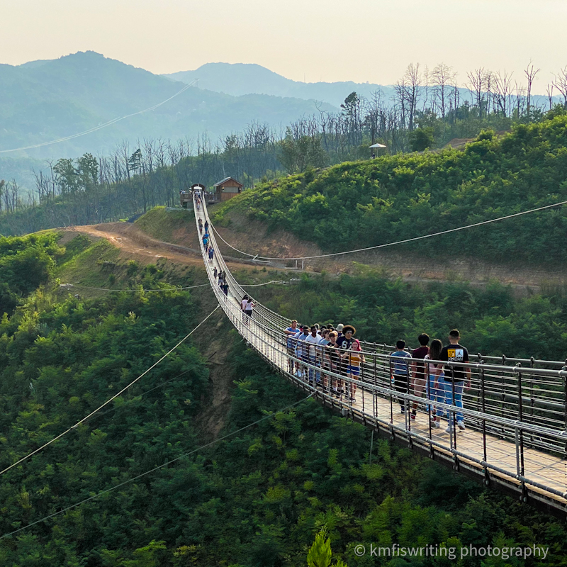

SkyBridge
The Gatlinburg SkyBridge is the longest pedestrian cable bridge in North America, and it is located at the Gatlinburg SkyLift Park. The SkyBridge has been featured on numerous national news outlets such as CNN, NBC World News Tonight, CBS Evening News, ABC World News, Fox News, Yahoo, People.com, Travel Channel, Discovery Channel, Southern Living, and more!
Hours

- Sunday: 9AM - 9PM
- Monday: 9AM - 9PM
- Tuesday: 9AM - 9PM
- Wednesday: 9AM - 9PM
- Thursday: 9AM - 9PM
- Friday: 9AM - 10PM
- Saturday: 9AM - 10PM
Pricing
Single Use
- Adult (12-64) - $32.95
- Senior (65+) - $25.95
- Junior (4-11) - $18.95
- Child (3 & Below ) - FREE
Unlimited Use
- Adult (12-64) - $34.95
- Senior (65+) - $27.95
- Junior (4-11) - $20.95
- Child (3 & Below ) - FREE